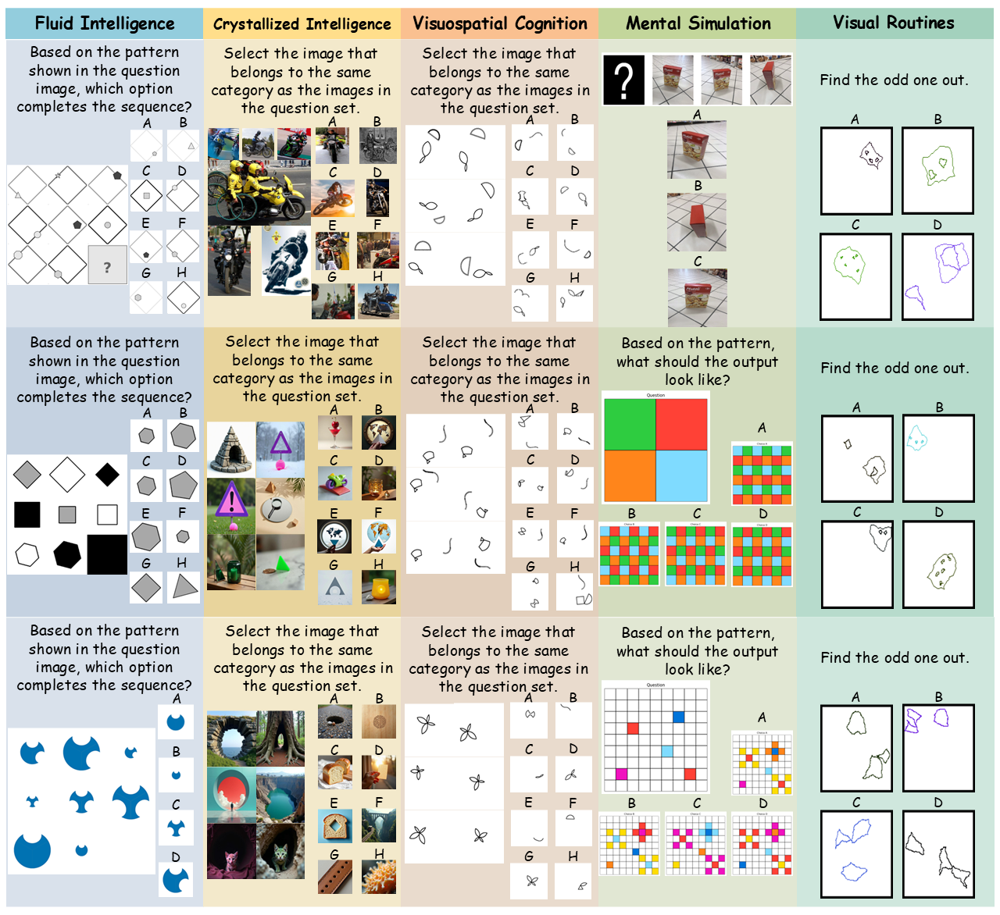
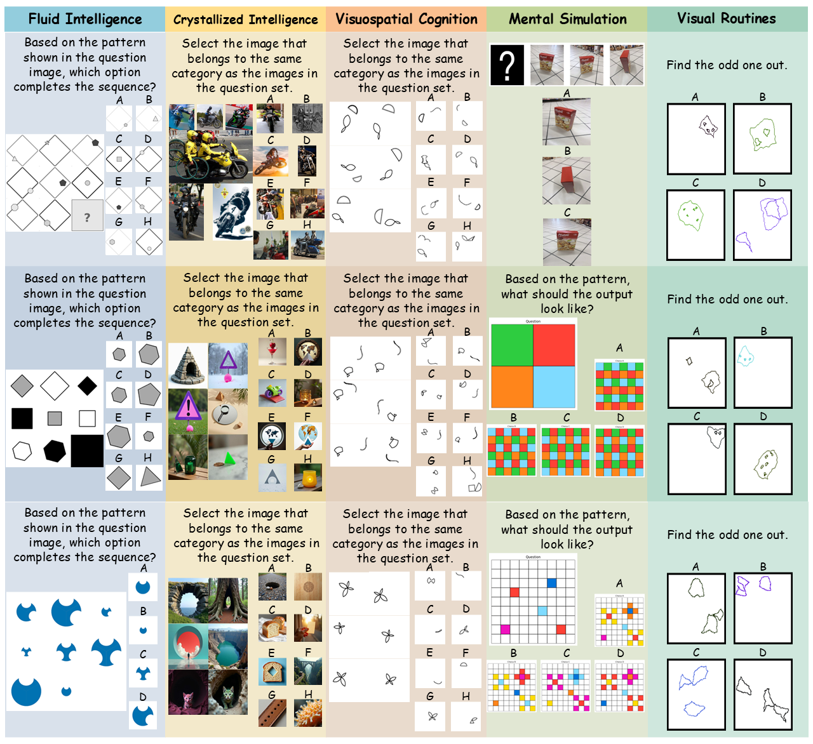

Toward Cognitive Supersensing in Multimodal Large Language Model
Abstract
Multimodal Large Language Models (MLLMs) have achieved remarkable success in open-vocabulary perceptual tasks, yet their ability to solve complex cognitive problems remains limited, especially when visual details are abstract and require visual memory. Current approaches primarily scale Chain-of-Thought (CoT) reasoning in the text space, even when language alone is insufficient for clear and structured reasoning, and largely neglect visual reasoning mechanisms analogous to the human visuo-spatial sketchpad and visual imagery. To mitigate this deficiency, we introduce Cognitive Supersensing, a novel training paradigm that endows MLLMs with human-like visual imagery capabilities by integrating a Latent Visual Imagery Prediction (LVIP) head that jointly learns sequences of visual cognitive latent embeddings and aligns them with the answer, thereby forming vision-based internal reasoning chains. We further introduce a reinforcement learning stage that optimizes text reasoning paths based on this grounded visual latent. To evaluate the cognitive capabilities of MLLMs, we present CogSense-Bench, a comprehensive visual question answering (VQA) benchmark assessing five cognitive dimensions. Extensive experiments demonstrate that MLLMs trained with Cognitive Supersensing significantly outperform state-of-the-art baselines on CogSense-Bench and exhibit superior generalization on out-of-domain mathematics and science VQA benchmarks, suggesting that internal visual imagery is potentially key to bridging the gap between perceptual recognition and cognitive understanding. We will open-source the CogSense-Bench and our model weight.
✅ Contributions
- Cognitive Supersensing. We propose Cognitive Supersensing, a latent-space reasoning-and-learning framework with supervised fine-tuning and reinforcement learning stages that endows MLLMs with visual imagery capability by aligning semantic reasoning with latent visual world modeling.
- CogSense-Bench. We introduce CogSense-Bench, a comprehensive benchmark spanning five cognitive dimensions, fluid intelligence, crystallized intelligence, visuospatial cognition, mental simulation, and visual routines, providing a systematic testbed for evaluating visual cognition beyond perceptual recognition and supporting future research in this direction.
- Through extensive experiments, we show that reasoning and planning purely in text space is often insufficient for visual cognition: CogSense-8B achieves SoTA performance on CogSense-Bench and exhibits strong OOD generalization on challenging mathematics and science VQA benchmarks, outperforming competitive baselines that rely on text-only planning.
🧾 CogSense Dataset and Benchmark
CogSense-Dataset comprises various visual cognitive questions classified into five categories: Fluid Intelligence, Crystallized Intelligence, Visuospatial Cognition, Mental Simulation, and Visual Routines, which require visual imagery and cognitive supersensing with deep thinking and reasoning.
 

CogSense-Bench is a comprehensive benchmark spanning five cognitive dimensions, fluid intelligence, crystallized intelligence, visuospatial cognition, mental simulation, and visual routines, providing a systematic testbed for evaluating visual cognition beyond perceptual recognition and supporting future research in this direction.
Method Overview
📊 Experiment Results
Cognitive Ability Results
We evaluate CogSense-8B with different VLM baselines on CogSense-Bench. Ourmodel achieves SoTA performance in all tasks and delivers the strongest overall accuracy 73.8%, surpassing GPT-5.2 by +33.5.
CogSense-8B more effectively captures the underlying visual regularities required for abstract pattern reasoning compared to mainstream MLLMs.
General Ability Results
We also evaluate the general vision-language understanding ability of CogSense-8B. CogSense-8B maintains robust performance on these general benchmarks, comparable to the backbone model.
Ablation Study
We evaluate performance across three variants: the standard SFT without LVIP, SFT with LVIP, and CogSense-8B that combines LVIP-supervised SFT and RL. These gains indicate that RL plays a vital role in refining the model's reasoning logic based on the supersensing obtained by LVIP.
Out-of-Domain Evaluation
To further verify the generalization capability of CogSense-8B, we extend our evaluation to out-of-domain scenarios using the Chemistry and Math subsets of the EMMA benchmark, with both the question and the options are images.
BibTeX
@article{YourPaperKey2024,
title={Your Paper Title Here},
author={First Author and Second Author and Third Author},
journal={Conference/Journal Name},
year={2024},
url={https://your-domain.com/your-project-page}
}